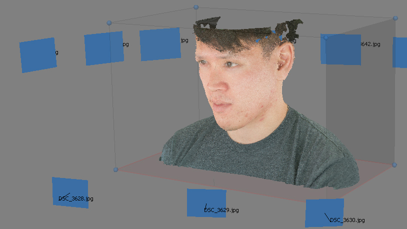

Photogrammetry
1.0
open-MVG-MVS
OpenMVS
OpenMVG
MVE
MVE
mvs-texturing
dmfusion
CMVS
Sift
Bundler
CMVS-PMVS
Poisson Surface Reconstruction
STANFORD
Scanalyze
VripPack
Volfill
MISC
Build Ceres
ply
perl modules
Exif tools
Camera Sensor Size Database
compilers
bin
source me
Datasets
Visual Sfm
CloudCompare
Theia Vision Library
Regard3d
InstantMesh
Photogrammetry
Docs
»
Welcome to my Photogrammetry documentation!
View page source
Welcome to my Photogrammetry documentation!
¶

Contents:
open-MVG-MVS
¶
OpenMVS
Web references
Use openMVS
build OpenMVS
OpenMVG
Web references
Docs
openMVG pipeline
see descriptors
Color Harmonisation
Other Tools
build OpenMVG
MVE
¶
MVE
Web references
using mve
typical pipeline
makescene
sfmrecon
get sfm from openMVG
dmrecon
scene2pset
PoissonRecon
SurfaceTrimmer
fssrecon
texrecon
building mve
build umve
install qt5
mvs-texturing
Web references
build
command
dmfusion
build
construction
CMVS
¶
Sift
Web references
Bundler
Web references
Install Bundler
CMVS-PMVS
Web references
Docs
build CMVS-PMVS
jhead
Poisson Surface Reconstruction
Web references
StreaminRecon
STANFORD
¶
Scanalyze
Web Reference
build scanalyze
run scanalyze
VripPack
Web references
building
run vrip
Volfill
Web references
build
ply2vri
MISC
¶
Build Ceres
get SuiteSparse
add Metis to Suitesparse
build SuiteSparse
install Ceres
Install Intel’s Threading Building Blocks
build gflags
build ceres
ply
Web references
build
perl modules
Web references
cpanm
installing new modules
quaternion modules
converting matrix to quaternion
exif tools
print colors
JSON module
Exif tools
exif tools
jhead
Camera Sensor Size Database
Web references
Digital Camera Database
opemMVG
mve
compilers
bin
bundler
CMVS-PMVS
openMVS
MVE
Poisson
Misc
source me
Datasets
Visual Sfm
Web references
CloudCompare
Web references
install CloudCompare
edit .bashrc
Theia Vision Library
Web references
building gflags
building Theia
Regard3d
Web References
InstantMesh
Web references
Code
Indices and tables
¶
Index
Module Index
Search Page
{kind=link}